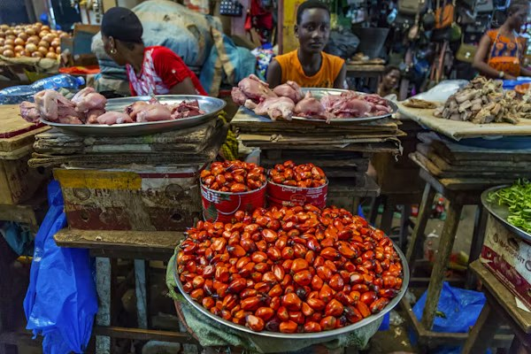
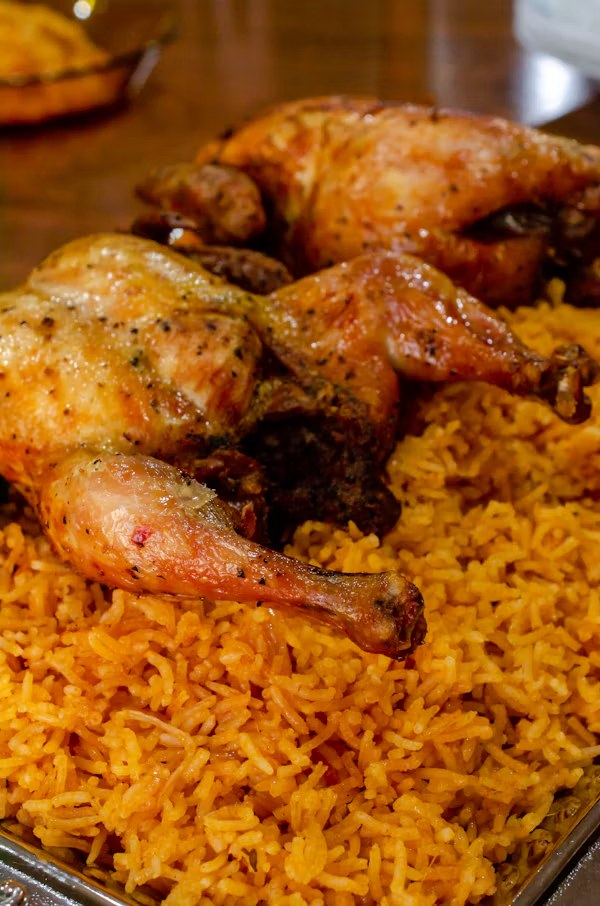
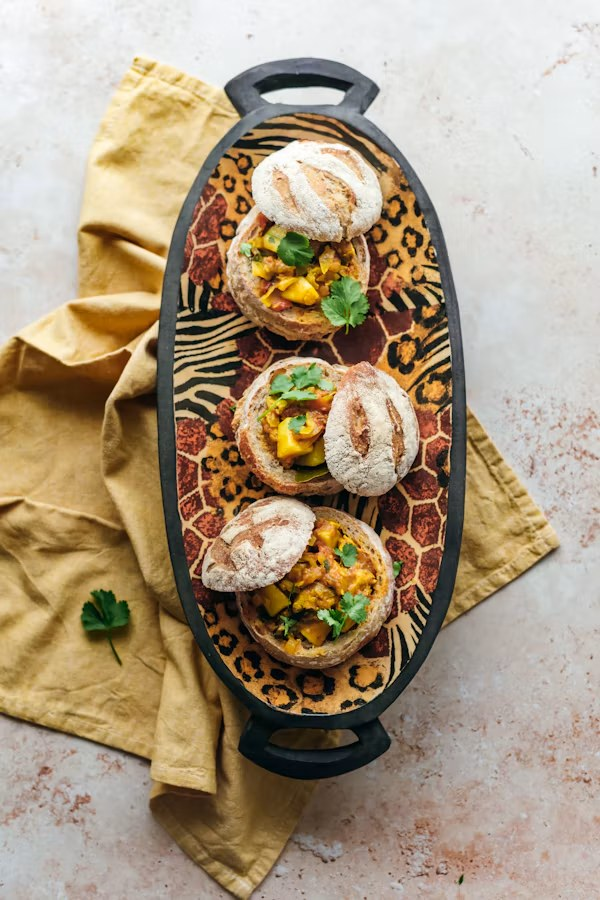
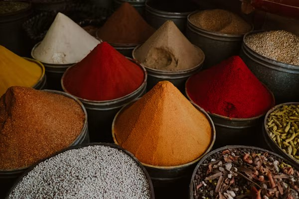

West Africa
Staples: Palm oil · Scotch bonnet · Rice
Welcome · 54 countries, one table
Discover the dishes, spices and stories that shape African kitchens, from West African jollof to Rwandan isombe.
Explore recipesOur mission
Every dish carries history: palm oil stews of the coast, berbere from the Ethiopian highlands, and ras el hanout from Moroccan spice markets. We collect these recipes so they keep being cooked.
Featured dishes

Nigeria · West Africa
Tomato-and-pepper rice cooked low until the bottom turns smoky.

Morocco · North Africa
Slow-braised lamb with apricots, cumin and preserved lemon.

Rwanda · East Africa
Pounded cassava leaves simmered with peanut paste and palm oil.

South Africa · Southern Africa
Durban curry served in a hollowed-out loaf of white bread.
Explore by region
Each region has its own staples, spices and cooking methods. Pick one to see its food culture and signature dishes.

Staples: Palm oil · Scotch bonnet · Rice

Staples: Ras el hanout · Couscous · Tagine

Staples: Berbere · Teff · Cassava leaves
Latest food trends
01 · Grains
The tiny Ethiopian grain behind injera is turning up in bakeries worldwide.
02 · Spices
Nigeria's peanut-chili rub is moving onto popcorn, fries and roast veg.
03 · Kitchens
Bean, leaf and grain dishes that were vegan long before it was a trend.